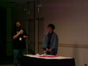

Ruby Conference 2006 レポート
書いた人：ささだ
はじめに
先月 10 月 20 日 (金) 〜 22 日 (日) まで、アメリカはコロラド州デンバーにて、毎年恒例の Sixth International Ruby Conference、通称 RubyConf 2006 が行われました。本稿では RubyConf 2006 をとてもとてもとても簡単に紹介したいと思います。詳細なレポートは後述するページに日本語、英語ともに充実しているので、そちらをご覧ください。
RubyConf 2006 について

- 開催日
- 2006 年 10 月 20 日 (金) 〜 22 日 (日)
- 開催場所
- Embassy Suites Southeast, Denver, Colorado, USA
- 開催母体
- Ruby Central
- 参加者
- 300 人くらい？ 日本人参加者は 8 人
- 写真
- flickr にたくさんアップされています http://www.flickr.com/search/?q=rubyconf+2006
そういえば、今年は発表者は参加費が無料でした。ラッキー。
スケジュール
開催スケジュールは以下のとおりです。多分、スケジュールのページが公式ページから消えてしまうので、全部貼り付けておきました。
なお、日本人の発表者は高橋さん、まつもとさん（ラウンドテーブル・キーノート）、ささだでした。
10 月 20 日 (金)
- Continental breakfast 8:30
- Welcome 9:15
Session 1 10:00-12:00
- Masayoshi Takahashi “The History of Ruby”
-
Evan Phoenix “Sydney and Rubinius: Hardcore Ruby”
- Lunch 12:00
Session 2 13:30-16:30
- Geoffrey Grosenbach “Dynamic Graphics With Ruby”
- Kevin Clark “Life After mkmf”
- Zed Shaw “Iron Mongrel: Fuzzing, Auditing, Thrashing, Risk and The Ways Of Mongrel Destruction”
- John Long “Radiant - Content Managment Simplified”
dinner (on your own)
- Yukihiro “matz” Matsumoto Roundtable
10 月 21 日 (土)
- Continental breakfast 8:30
Session 3 9:00-11:30
- Nathaniel Talbott “Open Classes, Open Companies”
- Laurent Sansonetti “Leveraging Mac OS X from Ruby”
-
Glenn Vanderburg “Rinda and DRb in the Real World”
- Lunch 12:00
Session 4 13:30-17:00
- Josh Susser “More than enough rope to hang yourself”
- Rich Kilmer “Web 2.0 Beyond the Browser”
- Tim Bray “I18n, M17n, Unicode, and all that”
-
Michael Granger “Speak My Language: Natural Language Processing in Ruby”
- Conference Dinner, sponsored by ThoughtWorks 18:00
After dinner
- Keynote address: Yukihiro “matz” Matsumoto
10 月 22 日 (日)
- Continental breakfast 8:30
Session 5 9:00-12:00
- Justin Gehtland “Streamlined: A Framework for Data-centric Web Applications”
- Koichi SASADA “YARV: on Rails?”
-
John Lam “You got your Ruby in my CLR!”
- Lunch 12:00
Google Summer of Code Student Talks 1:30-3:30
参加レポート
去年大変好評だった mput さんによる RubyConf 参加レポートを、今年も書いてくれました。
まつもとさんの日記のエントリです。
Nick Sieger の blog にとても詳しい実況が載っています。
kiwamu 日記にもレポートが上がっています。
おわりに
毎年、RubyConf に行くと、「こんなにも Ruby は熱いのか！」ということがわかります。Ruby は Rails だけじゃないんですねぇ。RubyKaigi で飽き足らなくなったら、ぜひ RubyConf に出席してみることをお勧めします。